Chapter 12 The Doubly Robust or the Augmented Inverse Propensity Score Weighting Estimator for the Average Causal Effect
Under ignorability  and overlap
and overlap  , Chapter 11 has shown two identification formulas of the average causal effect
, Chapter 11 has shown two identification formulas of the average causal effect  . First, the outcome regression formula is
. First, the outcome regression formula is
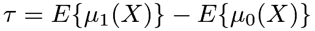 |
(62) |
where
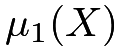 |
 |
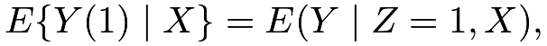 |
||
 |
|
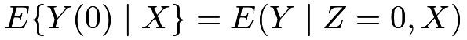 |
are the two conditional mean functions of the outcome given covariates under the treatment and control, respectively. Second, the IPW formula is
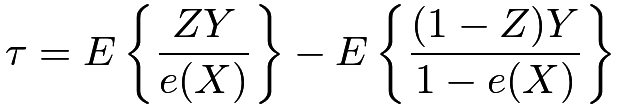 |
(63) |
where
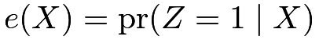 |
is the propensity score introduced in Chapter 11.
The outcome regression estimator requires fitting a model for the outcome given the treatment and covariates. It is consistent if the outcome model is correctly specified. The IPW estimator requires fitting a model for the treatment given the covariates. It is consistent if the propensity score model is correctly specified.
Mathematically, we have many combinations of (62) and (63) that lead to different identification formulas of the average causal effect. Below I will discuss a particular combination that has appealing theoretical properties. This combination motivates an estimator that is consistent if either the propensity score or the outcome model is correctly specified. It is called the doubly robust estimator, championed by James Robins (Scharfstein et al.,, 1999; Bang and Robins,, 2005).
62 The doubly robust estimator
62.1 Population version
We posit a model for the conditional means of the outcome
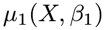
and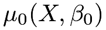
, indexed by the parameters and
and  . For example, if the conditional means are linear or logistic under the working model, then the parameters are just the regression coefficients. If the outcome model is correctly specified, then
. For example, if the conditional means are linear or logistic under the working model, then the parameters are just the regression coefficients. If the outcome model is correctly specified, then  and
and  .
We posit a working model for the propensity score
.
We posit a working model for the propensity score 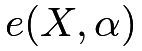
, indexed by the parameter . For example, if the working model is logistic, then is the regression coefficient. If the propensity score model is correctly specified, then
. For example, if the working model is logistic, then is the regression coefficient. If the propensity score model is correctly specified, then  . In practice, both models may be misspecified. Sometimes, we call them working models due to the possibility of misspecification.
. In practice, both models may be misspecified. Sometimes, we call them working models due to the possibility of misspecification.
Define
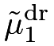 |
|
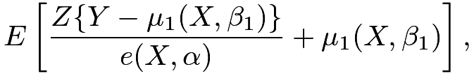 |
(64) | ||
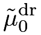 |
|
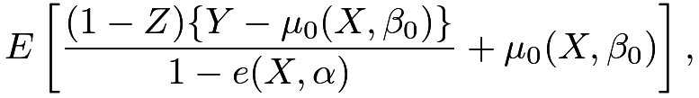 |
(65) |
which can also be written as
|
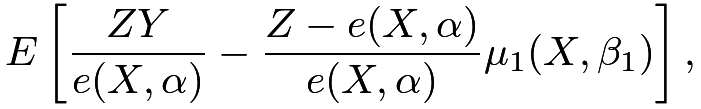 |
(66) | |||
|
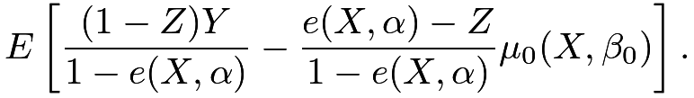 |
(67) |
The formulas in (64) and (65) augment the outcome regression estimator by inverse propensity score weighting terms of the residuals. The formulas in (66) and (67) augment the IPW estimator by the imputed outcomes. For this reason, the doubly robust estimator is also called the augmented inverse propensity score weighting (AIPW) estimator.
The augmentation strengthens the theoretical properties in the following sense.
Theorem 12.1
Assume ignorability and overlap .
- 1.
If either
or , then 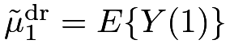
. - 2.
If either
or , then 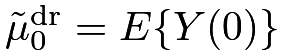
. - 3.
If either
or  , then
, then 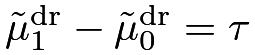
.
By Theorem 12.1,
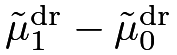
equals if either the propensity score model or the outcome model is correctly specified. That’s why it is called the doubly robust estimator.
if either the propensity score model or the outcome model is correctly specified. That’s why it is called the doubly robust estimator.
Proof of Theorem 12.1: I only prove the result for
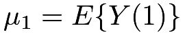
. The proof for the result for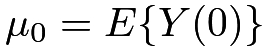
is similar.We have the decomposition
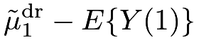 |
||||
|
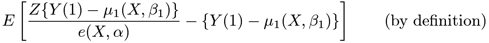 |
|||
|
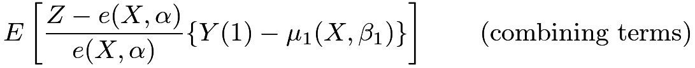 |
|||
|
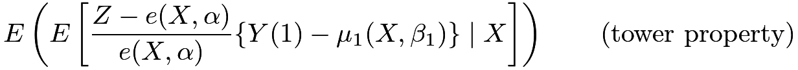 |
|||
|
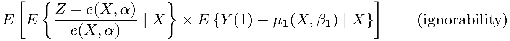 |
|||
|
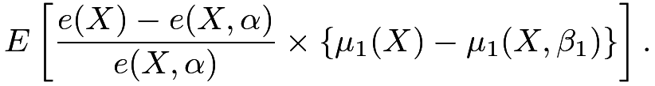 |
Therefore,
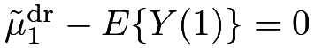
if either or .

62.2 Sample version
Based on the population versions of
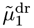
and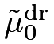
, we can obtain their sample analogs to construct a doubly robust estimator for.
Definition 12.1 (doubly robust estimator for the average causal effect)
Based on the data  , we can obtain a doubly robust estimator for by the following steps:32
, we can obtain a doubly robust estimator for by the following steps:32
-
[(1)]
- 1.
obtain the fitted values of the propensity scores:
 ;
; - 2.
obtain the fitted values of the outcome means:
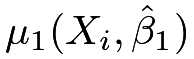
and ;
;
- 3.
construct the doubly robust estimator:
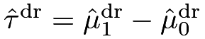
, where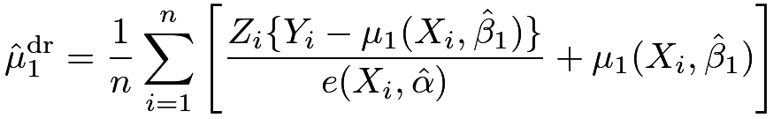
and
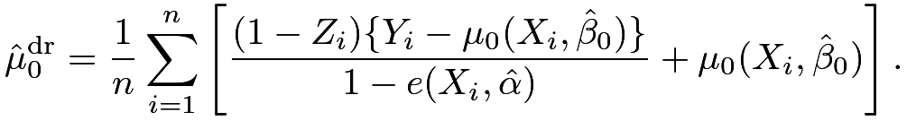
By Definition 12.1, we can also write the doubly robust estimator as
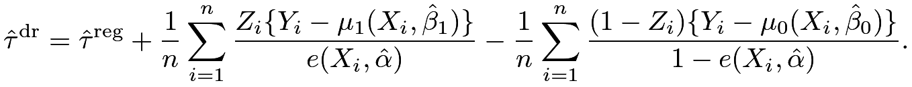 |
Analogous to (66) and (67), we can also rewrite it as
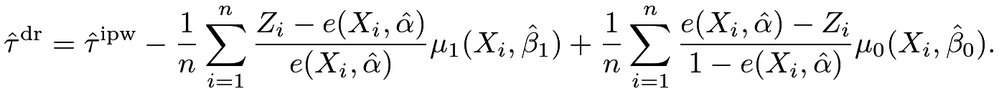 |
Funk et al., (2011) suggested to approximate the variance of  via the nonparametric bootstrap by resampling from
via the nonparametric bootstrap by resampling from  .
.
63 More intuition and theory for the doubly robust estimator
Although the beginning of this chapter claims that the basic identification formulas based on outcome regression and IPW immediately yield infinitely many other identification formulas, the particular forms of the doubly robust estimators in (64) and (65) are not obvious to come up with. The original motivation for (64) and (65) was quite theoretical, and relied on something called the semiparametric efficiency theory in advanced mathematical statistics (Bickel et al.,, 1993). It is beyond the level of this book. Below I will give two intuitive perspectives to construct (64) and (65). Both Sections 63.1 and 63.2 below focus on the estimation of  since the estimation of
since the estimation of  is similar by symmetry.
is similar by symmetry.
63.1 Reducing the variance of the IPW estimator
The IPW estimator for  based on
based on
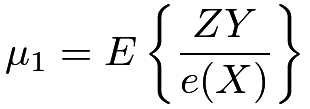 |
completely ignores the outcome model of  . It has the advantage of being consistent without assuming any outcome model. However, if the covariates are predictive of the outcome, the residual based on a working outcome model usually has a smaller variance than the outcome even when this working outcome model is wrong. With a possibly misspecified outcome model , a trivial decomposition holds:
. It has the advantage of being consistent without assuming any outcome model. However, if the covariates are predictive of the outcome, the residual based on a working outcome model usually has a smaller variance than the outcome even when this working outcome model is wrong. With a possibly misspecified outcome model , a trivial decomposition holds:
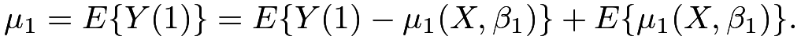 |
If we apply the IPW formula to the first term in the above formula viewing
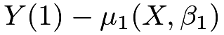
as a “pseudo potential outcome” under the treatment, we can rewrite the above formula as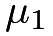 |
|
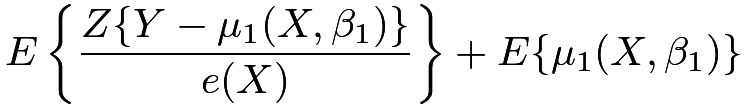 |
(68) | ||
|
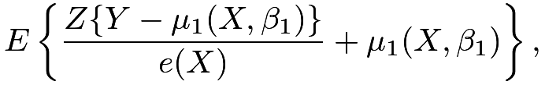 |
(69) |
which holds if the propensity score model is correct without assuming that the outcome model is correct. Using a working model to improve efficiency is an old idea from survey sampling. Little and An, (2004) and Lumley et al., (2011) pointed out its connection with the doubly robust estimator.
63.2 Reducing the bias of the outcome regression estimator
The discussion in Section 63.1 starts with the IPW estimator and improves its efficiency based on a working outcome model. Alternatively, we can also start with an outcome regression estimator based on
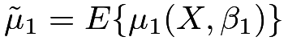 |
which may not be the same as since the outcome model may be wrong. The bias of this estimator is
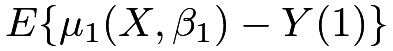
, which can be estimated by an IPW estimator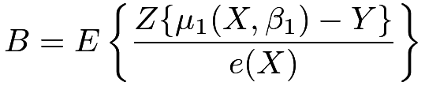 |
if the propensity score model is correct. So a de-biased estimator is
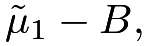
which is identical to (69).64 Examples
64.1 Summary of some canonical estimators for
The following R code implements the outcome regression, HT, Hajek, and doubly robust estimators for . These estimators can be conveniently implemented based on the fitted values of the glm function. The default choice for the propensity score model is the logistic model, and the default choice for the outcome model is the linear model with out.family = gaussian33. For binary outcomes, we can also specify out.family = binomial to fit the logistic model.
It is tedious to calculate the analytic formulas for the variances of the above estimators. The bootstrap provides convenient approximations to the variances based on resampling from
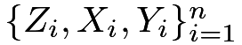
. Building upon the function OS_est above, the following function returns point estimators as well as the bootstrap standard errors.64.2 Simulation
I will use simulation to evaluate the finite-sample properties of the estimators under four scenarios:
- 1.
both the propensity score and outcome models are correct;
- 2.
the propensity score model is wrong but the outcome model is correct;
- 3.
the propensity score model is correct but the outcome model is wrong;
- 4.
both the propensity score and outcome models are wrong.
I will report the average bias, the true standard error, and the average estimated standard error of the estimators over simulation.
In case 1, the data generating process is
In case 2, I modify the propensity score model to be nonlinear:
In case 3, I modify the outcome model to be nonlinear:
In case 4, I modify both the propensity score and the outcome model.
We set the sample size to be  and generate
and generate  independent data sets according to the data-generating processes above.
In case 1,
independent data sets according to the data-generating processes above.
In case 1,
All estimators are nearly unbiased. The two weighting estimators have larger variances. In case 2,
The two weighting estimators are severely biased due to the misspecification of the propensity score model. The outcome regression and doubly robust estimators are nearly unbiased.
In case 3,
The outcome regression estimator has a larger bias than the other three estimators due to the misspecification of the outcome model. The weighting and doubly robust estimators are nearly unbiased.
In case 4,
All estimators are biased because both the propensity score and outcome models are wrong. The HT and doubly robust estimator has the largest bias. When both models are wrong, the doubly robust estimator appears to be doubly fragile.
In all the cases above, the bootstrap standard errors are close to the true ones when the estimators are nearly unbiased for the true average causal effect.
64.3 Applications
Revisiting Example 10.3, we obtain the following estimators and bootstrap standard errors:
The two weighting estimators are much larger than the other two estimators. Truncating the estimated propensity score at
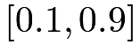
, we obtain the following estimators and bootstrap standard errors:The Hajek estimator becomes much closer to the outcome regression and doubly robust estimators, while the Horvitz–Thompson estimator is still an outlier.
65 Some further discussion
Recall the proof of Theorem 12.1, the key for the double robustness property is the product structure in
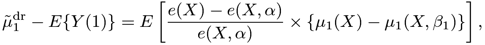 |
which ensures that the estimation error is zero if either
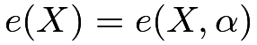
or . This delicate structure renders the doubly robust estimator possibly doubly fragile when both the propensity score and the outcome models are misspecified. The product of two errors multiply to yield potentially much larger errors. The simulation in Chapter 64.2 confirms this point.Kang and Schafer, (2007) criticized the doubly robust estimator based on simulation studies. They found that the finite-sample performance of the doubly robust estimator can be even wilder than the simple outcome regression and IPW estimators. Despite the critique from Kang and Schafer, (2007), the doubly robust estimator has been a standard strategy in causal inference since the seminal work of Scharfstein et al., (1999). Recently, it was resurrected in the theoretical statistics and econometrics literature with a fancier name “double machine learning” (Chernozhukov et al.,, 2018). The basic idea is to replace the working models for the propensity score and outcome with machine learning tools which can be viewed as more flexible models than the traditional parametric models.
66 Homework problems
12.1 A sanity check
Consider the case in which the covariate is discrete and the parameter of interest is . Without imposing any model assumptions, the estimated propensity score  equals , the proportion of units receiving the treatment, and the estimated outcome means are the sample means of the outcomes and under treatment, within stratum . Show that the stratified estimator, outcome regression estimator, HT estimator, Hajek estimator, and doubly robust estimator are all identical numerically.
equals , the proportion of units receiving the treatment, and the estimated outcome means are the sample means of the outcomes and under treatment, within stratum . Show that the stratified estimator, outcome regression estimator, HT estimator, Hajek estimator, and doubly robust estimator are all identical numerically.
12.2 An alternative form of the doubly robust estimator for
Motivated by (68), we have an alternative form of the doubly robust estimator for :
Show that if either or . Give the analogous formula for estimating  . Give the sample analog of the doubly robust estimator for based on these formulas.
. Give the sample analog of the doubly robust estimator for based on these formulas.
Remark: This form of doubly robust estimator appeared in Robins et al., (2007).
12.3 An upper bound of the bias of the doubly robust estimator
Consider the population version of the doubly robust estimator for .
Show that
Find the analogous upper bound for the bias of for .
Remark: You may find Section 30.A.4 useful for the proof.
12.4 Data analysis of Example 10.1
Analyze the dataset cps1re74.csv using the methods discussed so far.
12.5 Analyzing a dataset from the Karolinska Institute
Rubin, (2008) used the dataset karolinska.txt to illustrate the ideas of causal inference in observational studies. The dataset has 158 cardia cancer patients diagnosed between 1988 and 1995 in Central and Northern Sweden, 79 diagnosed at large volume hospitals, defined as treating more than ten patients with cardia cancer during that period, and 79 diagnosed at the remaining small volume hospitals. The treatment z is the indicator of whether a patient was diagnosed at a large volume hospital. The outcome y is whether the patient survived longer than 1 year after the diagnosis. The covariates x contain information about age, whether a patient was from a rural area, and whether a patient was male.
Analyze the dataset using the methods discussed so far.
12.6 Recommended reading
Lunceford and Davidian, (2004) gave a review and comparison of many methods discussed in Chapters 11 and 12.
脚注
32. I used  for and for before when I did not want to emphasize the parameters in the working models.
for and for before when I did not want to emphasize the parameters in the working models.
33. The glm function is more general than the lm function. With out.family = gaussian, glm is identical to lm.